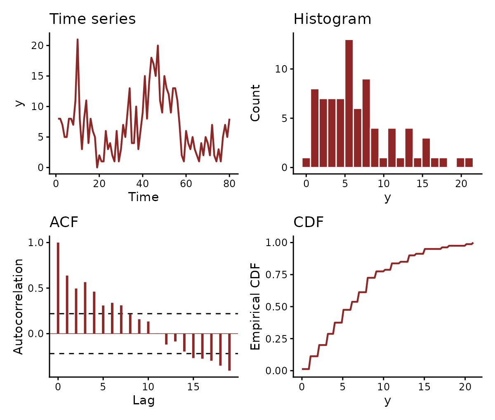

mvgam() takes data in long format, one row per series
and time. Most failed fits come from a frame that misses that shape: a
series column stored as character, gaps in the
time index, a column the formula names but the data lack,
missing covariate values or a response outside the family’s support.
This vignette sets out each requirement and shows how
mvgam_data() checks a frame against them before any Stan
code is compiled.
The long-format requirement
Each observation takes its own row, indexed by a time column and, for
a model with a latent trend, a series column. The default names are
time and series. Every trend constructor takes
time and series arguments naming other
columns, as in AR(time = epiWeek, series = plotID), and
jsdgam() takes unit and species.
The birdsong data that ship with mvgam use the defaults,
with weekly counts of four species over 80 weeks:
data(birdsong)
str(birdsong)
#> 'data.frame': 320 obs. of 7 variables:
#> $ series : Factor w/ 4 levels "warbler","thrush",..: 1 1 1 1 1 1 1 1 1 1 ...
#> $ time : int 1 2 3 4 5 6 7 8 9 10 ...
#> $ y : int 8 8 7 5 5 8 8 7 11 21 ...
#> $ species : Factor w/ 4 levels "warbler","thrush",..: 1 1 1 1 1 1 1 1 1 1 ...
#> $ week : int 1 2 3 4 5 6 7 8 9 10 ...
#> $ week_in_year: int 1 2 3 4 5 6 7 8 9 10 ...
#> $ count : int 8 8 7 5 5 8 8 7 11 21 ...
head(birdsong, 4)
#> series time y species week week_in_year count
#> 1 warbler 1 8 warbler 1 1 8
#> 2 warbler 2 8 warbler 2 2 8
#> 3 warbler 3 7 warbler 3 3 7
#> 4 warbler 4 5 warbler 4 4 5Each (series, time) cell has one row.
series is a factor and time an integer week. A
fit uses the series and time columns, the response its formula names and
any covariates the formulas refer to. The species and
week columns duplicate series and
time. RW(time = week, series = species) would
use them instead.
sim_mvgam() returns data in the same format:
set.seed(1)
simdat <- sim_mvgam(n_series = 3L, n_timepoints = 24L,
prop_missing = 0.2)
head(simdat$data_train, 6)
#> y series time x
#> 1 1.5818644 series_1 1 -0.9379653
#> 2 1.6736683 series_1 2 -0.5115044
#> 3 1.4503445 series_1 3 0.2914135
#> 4 NA series_1 4 1.6328312
#> 5 3.0462045 series_1 5 -1.1932723
#> 6 0.1742494 series_1 6 1.5935587prop_missing = 0.2 sets a fifth of the responses to
NA. A missing response is allowed: mvgam()
leaves it out of the likelihood and still estimates the latent state at
that time.
The series factor
A model with a latent trend places every row on one series. Its data
needs a series column: series by default, or any column
named through AR(series = ...) or
jsdgam(species = ...). That column must be a
factor. Its levels fix the order of the series in every
summary, plot and forecast. A character column looks the
same in head() and fails the check:
class(birdsong$series)
#> [1] "factor"
levels(birdsong$series)
#> [1] "warbler" "thrush" "wren" "finch"
char_series <- birdsong
char_series$series <- as.character(char_series$series)
mvgam_data(char_series, family = poisson(),
trend_formula = ~ AR(), plot = FALSE)
#> Error:
#> ! Column 'series' must be a factor.
#> Got class 'character'.
#> A factor's levels fix the order of the series.
#> Convert it with data$series <- factor(data$series).factor() converts the column. A single time series needs
the column too, holding one level:
one <- birdsong[birdsong$series == levels(birdsong$series)[1L], ]
one$series <- factor("series_1")
levels(one$series)
#> [1] "series_1"A model without a trend has no series axis and needs no series column.
mvgam() drops a level that no row holds.
droplevels() does the same before fitting:
extra_level <- birdsong
extra_level$series <- factor(
extra_level$series,
levels = c(levels(extra_level$series), "phantom_species")
)
setdiff(levels(extra_level$series), unique(extra_level$series))
#> [1] "phantom_species"
extra_level$series <- droplevels(extra_level$series)
levels(extra_level$series)
#> [1] "warbler" "thrush" "wren" "finch"The time variable
The time column must be numeric. A trend that advances the latent
state one time step at a time, such as RW(),
AR(), VAR(), LLT() or
PW(), needs evenly spaced times within each series. The
response may still be missing at any time.
range(birdsong$time)
#> [1] 1 80
tapply(birdsong$time, birdsong$series, function(t) diff(range(t)) + 1L)
#> warbler thrush wren finch
#> 80 80 80 80Each species covers the same 80 weeks. Where some
(series, time) rows are absent altogether,
expand.grid() builds the full grid and a merge restores the
rows:
sparse <- birdsong[!(birdsong$series == "warbler" &
birdsong$time %in% c(5L, 6L, 7L)), ]
nrow(sparse)
#> [1] 317
filled <- merge(
expand.grid(series = levels(sparse$series),
time = sort(unique(sparse$time))),
sparse, by = c("series", "time"), all.x = TRUE
)
nrow(filled)
#> [1] 320
sum(is.na(filled$y))
#> [1] 3The merge gives each restored row an NA response.
Irregular sampling
Where observations are irregular by design, CAR() fits a
continuous-time AR(1) process whose autocorrelation decays with the time
elapsed between observations. Its series may be observed at their own
times, with no rows added for the times a series lacks.
ZMVN() has no time dynamics and accepts any spacing. On
such a series, plot(type = "residuals") checks the
residuals with a semivariogram, which measures their dependence by the
time between observations. ?CAR gives a worked example.
Converting time series objects
series_to_mvgam() builds the long frame from the objects
other forecasting packages work with: a ts,
mts or msts from base R and forecast, a
tsibble from the tidyverts packages or a wide
data.frame holding a date column and one column per series.
Each column of an mts becomes a series. h
holds out the final time steps as test data:
deaths <- series_to_mvgam(cbind(male = mdeaths, female = fdeaths),
h = 12L)
head(deaths$data_train, 4)
#> series time y index season
#> 1 male 1 2134 1974.000 1
#> 2 female 1 901 1974.000 1
#> 3 male 2 1863 1974.083 2
#> 4 female 2 689 1974.083 2The season column holds the month, taken from the
frequency of the ts, for a cyclic smooth such as
s(season, bs = "cc"). A tsibble supplies its
series from its key and its time grid from its index. Because a regular
tsibble is filled to its full grid, the months its index
skips arrive as rows with a missing response. An irregular
tsibble keeps its own times for CAR() or
ZMVN(). Measured variables other than the response become
covariates:
library(tsibble)
set.seed(2)
visits <- tsibble(
month = rep(yearmonth("2023 Jan") + c(0:5, 8:11), 2),
clinic = rep(c("north", "south"), each = 10),
visits = rpois(20, 30),
staff = rpois(20, 6),
key = clinic, index = month
)
clinics <- series_to_mvgam(visits, response = "visits")
clinics[clinics$time %in% 6:9, ]
#> series time visits month clinic season staff
#> 11 north 6 28 2023 Jun north 6 8
#> 12 south 6 26 2023 Jun south 6 5
#> 13 north 7 NA 2023 Jul north 7 NA
#> 14 south 7 NA 2023 Jul south 7 NA
#> 15 north 8 NA 2023 Aug north 8 NA
#> 16 south 8 NA 2023 Aug south 8 NA
#> 17 north 9 40 2023 Sep north 9 8
#> 18 south 9 41 2023 Sep south 9 5Binding future rows from tsibble::new_data() to the
observed rows before conversion continues the same time
grid, which keeps the forecast frame aligned with the training
frame.
freq states seasonal periods in time steps, matching
frequency() for a ts and
seasonal.periods for an msts. A period above 1
adds a column holding the position of each row within it, named
season for a single period and season_7,
season_365.25 and so on for several. The same periods give
LLT() a season whose shape drifts over the years,
trend_formula = ~ LLT(season = 12), where a cyclic smooth
of season holds one shape fixed.
The response and family compatibility
Each family has a support the response must lie in: non-negative
integers for poisson() and negbinomial(),
\((0, 1)\) for Beta(),
positive reals for Gamma() and lognormal() and
0 or 1 for bernoulli(). mvgam() checks the
response against the support before compiling:
bad_family <- data.frame(
y = rnorm(20),
time = 1:20,
series = factor("series_1")
)
mvgam(y ~ 1, data = bad_family, family = Beta(),
chains = 1L, iter = 1100L, warmup = 1000L, silent = 2L)
#> Error:
#> ! 'y' has values outside the support of family 'beta'.
#> Requires: 0 < 'y' < 1.
#> Observed range: [-1.959, 2.066]. 19 of 20 values fall outside, the first
#> at row 1.
#> Use zero_inflated_beta() for exact zeros or zero_one_inflated_beta() for
#> zeros and ones.The error names the support, the observed range and the first offending row.
Columns the formulas use
A formula names more columns than its covariates. brms builds the
model frame from the variable inside an offset(), the
grouping factor of a random effect and the columns of addition terms
such as trials(), weights() or
cens(). Each of them must be in the data. To show the
checks, the chunk below adds survey minutes as an exposure and an
observer as a grouping factor to birdsong. It then drops
the observer column:
surveys <- birdsong
surveys$minutes <- rep(c(30, 45, 60, 45), length.out = nrow(surveys))
surveys$observer <- factor(rep(c("a", "b", "c"),
length.out = nrow(surveys)))
no_observer <- surveys[, names(surveys) != "observer"]
mvgam_data(no_observer,
formula = y ~ offset(log(minutes)) + (1 | observer),
family = poisson(), plot = FALSE)
#> Error:
#> ! Columns the model uses are missing from 'data'.
#> Absent: 'observer'.mvgam() and stancode() refuse the same
frame before brms builds a model. A name held in data2,
such as a matrix covariate, counts as present when data2 is
passed to mvgam_data().
A binomial response counts successes out of the number of trials that
trials() names. A count above its trials lies outside the
family’s support. Here each week records how many of 12 listening points
detected the species. One row claims 14:
set.seed(2)
surveys$points <- 12L
surveys$detected <- rbinom(nrow(surveys), size = 12L, prob = 0.3)
surveys$detected[10L] <- 14L
mvgam_data(surveys, formula = detected | trials(points) ~ 1,
family = binomial(), plot = FALSE)
#> Error:
#> ! 'detected' has counts above its 'trials()' denominator.
#> 1 of 320 values exceed it, the first at row 10 (detected = 14, trials =
#> 12).Grouped trends
A hierarchical trend shares its dynamics among the series of a group.
The constructor’s gr argument names the column holding each
series’ group. Its subgr argument names the column holding
the series within that group. The two columns together identify each
series, which leaves the data no need of a series column.
Here the four birdsong species are split into two
habitats:
grouped <- birdsong[, names(birdsong) != "series"]
grouped$habitat <- factor(
ifelse(grouped$species %in% c("warbler", "thrush"),
"forest", "wetland")
)
mvgam_data(grouped, family = poisson(),
trend_formula = ~ AR(gr = habitat, subgr = species),
plot = FALSE)
#> ✔ Data check passed for family 'poisson (link = log)'.
#> • series: 4 levels
#> • time: 1 to 80
#> • n obs: 320 (0 NA)Every group must hold the same number of series. Each series must stay in one group. The check refuses an unbalanced design:
uneven <- grouped
uneven$habitat[uneven$species == "wren"] <- "forest"
mvgam_data(uneven, family = poisson(),
trend_formula = ~ AR(gr = habitat, subgr = species),
plot = FALSE)
#> Error:
#> ! Hierarchical trend models require the same number of series in every
#> group.
#> Grouping variable 'habitat' has unbalanced groups: forest=3, wetland=1.
#> Subset the data to a balanced design or combine small groups.
mvgam_data(): pre-flight validation
mvgam_data() runs the checks mvgam() runs
at fit time: the columns the formulas and the trend constructor name,
the series factor, even spacing for a trend that needs it, the response
support and missing values in the model’s columns. With
plot = TRUE it also draws the series, its histogram, its
autocorrelation and its empirical distribution:
mvgam_data(
data = birdsong,
family = poisson(),
series = 1L
)
#> ✔ Data check passed for family 'poisson (link = log)'.
#> • series: 4 levels
#> • time: 1 to 80
#> • n obs: 320 (0 NA)
The check reports the family, the number of series, the time range
and the number of rows. series = 1L draws the first
species. series = "all" draws every species in one faceted
plot. The call returns an mvgam_data object invisibly.
Data that fail a check raise an error. Three common cases:
bad_y <- birdsong
bad_y$y <- bad_y$y - 0.5 # introduce negative non-integers
mvgam_data(bad_y, family = poisson(), plot = FALSE)
#> Error:
#> ! 'y' has values outside the support of family 'poisson'.
#> Requires: 0 <= 'y' (integers only).
#> Observed range: [-0.5, 27.5]. 18 of 320 values fall outside, the first
#> at row 19.
#> Check the column for missing-data sentinels such as -1 or -999.Subtracting 0.5 left the counts fractional and some negative.
?brmsfamily gives the support of each brms family. Each
family mvgam adds gives its support on its own help page:
?tweedie, ?beta_nb,
?com_binomial, ?nmix or ?occ.
gap <- birdsong[birdsong$time != 5L, ]
mvgam_data(gap, family = poisson(), trend_formula = ~ AR(),
plot = FALSE)
#> Error:
#> ! The trend needs regularly spaced times in 'time'.
#> Gaps between times range from 1 to 2.
#> Add the missing times as rows with an NA response.
#> 'CAR()' models a trend over irregular times.trend_formula = ~ AR() turns on the spacing check, which
finds the removed week. Without a trend_formula,
mvgam_data() checks the data for a model with no trend,
which needs neither even spacing nor a series column.
A missing response is allowed, but a missing covariate value is not:
every row needs its covariates, including a row whose response is
missing. mvgam_data() checks the columns that the
formula and trend_formula it is given refer
to:
miss_cov <- birdsong
miss_cov$temp <- rnorm(nrow(miss_cov))
miss_cov$temp[5L] <- NA
mvgam_data(miss_cov, formula = y ~ temp,
family = poisson(), plot = FALSE)
#> Error:
#> ! Columns the model uses hold missing values in 'data'.
#> 'temp': 1 NA, first at row 5.
#> Impute the missing values before fitting.mvgam() runs the same check before compiling. Without a
formula, mvgam_data() cannot tell which
columns the model uses. It then leaves temp unchecked.
Newdata for forecasts: check_newdata()
forecast() and predict() take a
newdata frame holding the future times and every covariate
the model uses. check_newdata(newdata, data, trend_formula)
compares its time and series columns with the training data before any
prediction runs. Like mvgam(), it takes the column names
from the trend constructor. It also coerces the series column to the
training levels:
future_df <- data.frame(
series = factor(rep(levels(birdsong$series), each = 4L)),
time = rep(81L:84L, times = 4L)
)
str(check_newdata(future_df, birdsong, trend_formula = ~ AR()))
#> 'data.frame': 16 obs. of 2 variables:
#> $ series: Factor w/ 4 levels "warbler","thrush",..: 1 1 1 1 2 2 2 2 3 3 ...
#> $ time : int 81 82 83 84 81 82 83 84 81 82 ...A series the model never saw has no fitted trend to forecast from. The check refuses it:
bad_future <- data.frame(
series = factor("phantom_species"),
time = 81L
)
check_newdata(bad_future, birdsong, trend_formula = ~ AR())
#> Error:
#> ! Series in 'newdata' has levels absent from the training data.
#> Unseen: "phantom_species".
#> Fitted levels: "warbler", "thrush",
#> "wren", and "finch".mvgam(newdata = ) runs the same check on held-out data.
It also refuses a frame missing a column the formulas use.
Closure-unit data shape
Closure-unit families add a visit column to the long
format above. They are occ() and the variants of
nmix(). Each row records one visit to a sampling unit. The
sim_closure_unit_data() helper builds this layout:
occ_dat <- sim_closure_unit_data(
family = occ(),
type = 1L,
n_species = 2L,
n_sites = 12L,
n_visits = 3L,
seed = 1L
)
head(occ_dat$data_train, 6)
#> visit site series time y cap env tod_c
#> 1 1 1 sp_1 1 0 1 -0.6264538 -2.793352
#> 2 2 1 sp_1 1 1 1 -0.6264538 3.530878
#> 3 3 1 sp_1 1 1 1 -0.6264538 2.787765
#> 4 1 2 sp_1 2 0 1 0.1836433 -1.366631
#> 5 2 2 sp_1 2 1 1 0.1836433 -4.704676
#> 6 3 2 sp_1 2 0 1 0.1836433 2.312779series holds the species and time the
closure unit, which is the site here and the season when
multi_season = TRUE. visit numbers the repeat
visits within a unit and y records the detection. The
covariates of the state and detection formulas,
bf(y ~ ..., p ~ ...), are further columns.
mvgam_data() checks this layout when given
occ() or nmix():
mvgam_data(occ_dat$data_train, family = occ(),
formula = bf(y ~ env, p ~ tod_c), plot = FALSE)
#> ✔ Data check passed for family 'occ (link = logit)'.
#> • series: 2 levels
#> • time: 1 to 12
#> • n obs: 72 (0 NA)nmix() models counts. Its cap column sets
the upper bound on the latent abundance of each unit. The bound must be
constant within a unit and at least as large as every count observed
there:
nmix_dat <- sim_closure_unit_data(
family = nmix(), n_species = 2L, n_sites = 12L, n_visits = 3L,
seed = 1L
)$data_train
nmix_dat$cap <- 2L
mvgam_data(nmix_dat, family = nmix(),
formula = bf(y ~ env, p ~ tod_c), plot = FALSE)
#> Error:
#> ! Some 'cap' values are below the observed counts.
#> Row 12: cap = 2, y = 3.The N-mixture article fits a model to data in this layout.
Joint species distribution models
jsdgam() takes the same long format, with one row per
sampling unit and species. Its unit argument names the
column of units. Its species argument names the column of
species, a factor. The units carry no time order. jsdgam()
fits a ZMVN() factor model over them. Given that trend,
mvgam_data() runs the checks jsdgam()
runs:
set.seed(3)
jsdm_dat <- expand.grid(
site = 1:20,
species = factor(c("sp_a", "sp_b", "sp_c"))
)
jsdm_dat$elev <- rnorm(20)[jsdm_dat$site]
jsdm_dat$present <- rbinom(nrow(jsdm_dat), size = 1L, prob = 0.4)
mvgam_data(jsdm_dat, y = "present", formula = present ~ elev,
family = bernoulli(),
trend_formula = ~ ZMVN(time = site, series = species),
plot = FALSE)
#> ✔ Data check passed for family 'bernoulli (link = logit)'.
#> • series: 3 levels
#> • time: 1 to 20
#> • n obs: 60 (0 NA)Custom column names
The time and series arguments of a trend
constructor name other columns. A fit to birdsong can use
week and species directly:
mvgam(
y ~ s(week_in_year, bs = "cc", k = 10),
trend_formula = ~ AR(time = week, series = species),
data = birdsong,
family = poisson(),
chains = 2L, silent = 2L
)Every trend constructor takes these arguments.
A pre-fit checklist
Before calling mvgam(), check that:
- The series column is a factor. A hierarchical trend takes its series
from the
grandsubgrcolumns instead. - The time column is numeric. It is evenly spaced within each series
for a trend that steps one time at a time (
RW(),AR(),VAR(),LLT(),PW()). - Every column the formulas use is in the data: covariates, offsets, random-effect grouping factors and addition terms.
- No such column has missing values.
- The response lies in the family’s support.
mvgam_data(data, family = ..., formula = ..., trend_formula = ...)
checks all five.
Where to next
-
?mvgam_datafor the inspector’s full argument list. -
?check_newdatafor the check on forecast frames. -
?series_to_mvgamfor the conversion of ats, atsibbleor a wide frame. -
?brmsfamilyfor the brms family library, plus the help page of each family mvgam adds (?tweedie,?beta_nb,?com_binomial,?nmix,?occ) for its response-shape rules. -
?CARfor irregularly spaced times. - The overview vignette for the model surface that consumes the data validated here.
- The N-mixture article for the closure-unit grain in worked detail.
- The dynamic
factor vignette for the
trend_mapstructures that decide which series share a latent path once the data are in shape.